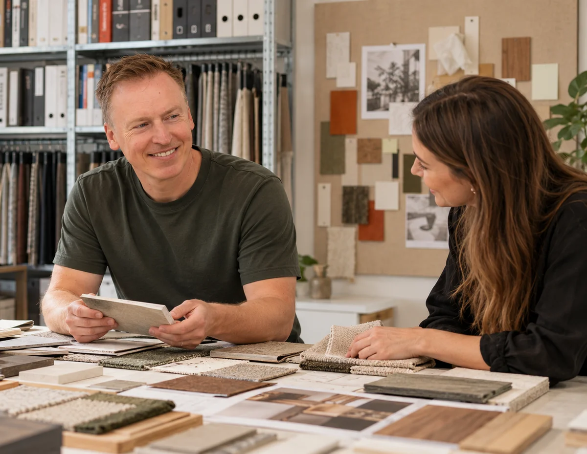

Aangenaam, ik ben Fred
Een kantoor begint bij de mensen die er werken.
Ik ontwerp kantoorinterieurs voor groeiende MKB-bedrijven. Eerst wil ik begrijpen hoe jullie werken. Daarna vertaal ik die werkdag naar indeling, materiaal, kleur, licht en meubilair.
Kennismaken ↗
Persoonlijk contact
Samen keuzes maken die passen.
Waar is concentratie nodig, waar ontstaat overleg en waar ontmoeten mensen elkaar? Die vragen vormen het begin van het ontwerp. Samen bepalen we de uitgangspunten voor jullie kantoor.
Je hebt persoonlijk contact met de ontwerper. Met korte lijnen en 3D-visualisaties worden keuzes zichtbaar en bespreekbaar voordat de uitvoering begint.
Mijn ontwerpvisie
De werkdag geeft richting aan de ruimte.
Een open kantoor is geen standaardantwoord. Focus, overleg en ontmoeting moeten in balans zijn. Daarom neem ik akoestiek vanaf het begin mee en kijk ik naar hoe ruimtes elkaar beïnvloeden.
Materialen, kleuren, verlichting en meubels volgen uit jullie manier van werken, uitstraling en budget. Het merk krijgt een plek in de ruimte, zonder overal logo’s te plaatsen.
Bekijk kantoorontwerp →Van plan naar praktijk
Een compact bureau, met mensen om op te bouwen.
Kleinere projecten begeleid ik persoonlijk. Bij grotere projecten werk ik samen met vertrouwde aannemers en specialisten. Mijn rol en die van de uitvoerende partijen leggen we per opdracht vast.
Bekijk mijn werkwijze →Dezelfde ervaring, een nieuwe naam
Van VDH Bedrijfsinterieurs naar Studio Van der Horst.
Studio Van der Horst bouwt voort op de projecten en ervaring van VDH Bedrijfsinterieurs. Oudere projecten en klantervaringen kunnen daarom nog onder die naam terugkomen.
De projecten laten zien hoe een klantvraag wordt vertaald naar keuzes in indeling, materiaal en sfeer.
Bekijk projecten →Uit de praktijk
Een ontvangst die past bij het merk.

Jacobs Verzekerd · aangeleverd projectbeeld.